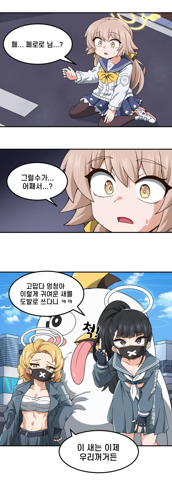
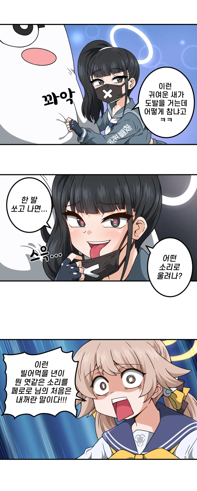
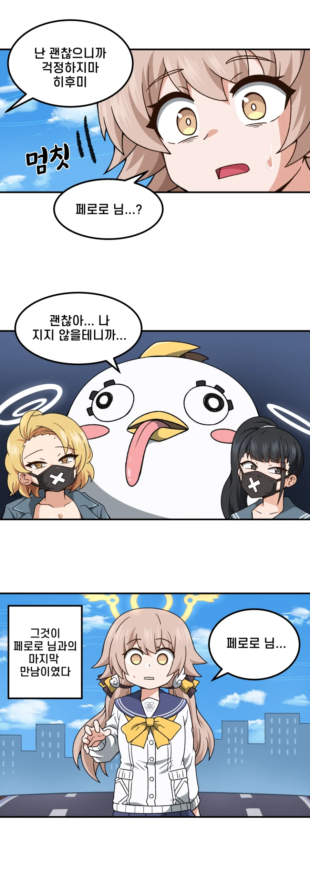
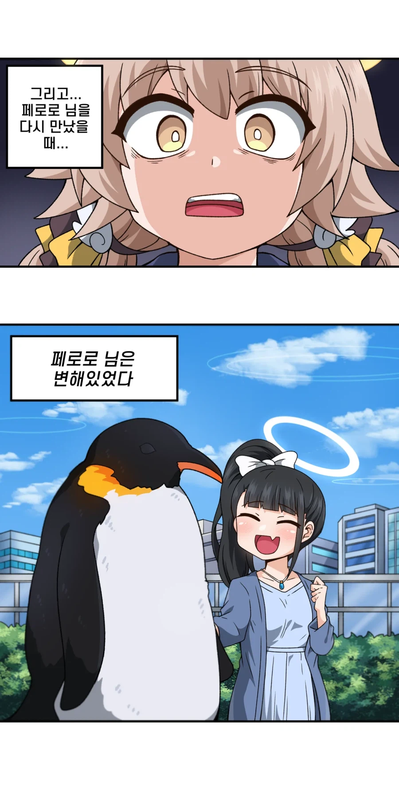

스케반은 사백안이 제일 꼴리는데 없네...
설명해줄멋쟁이구함
설명
저기 나오는 히후미라는 학생이 페로로를 엄청 좋아하고 실제 게임에서도 페로로를 소환해서 적들에게 도발을 거는건데 그렇게 소환한 페로로를 적(스케반)이 NTR해간다는 내용
오리가 황제펭귄 된거랑 아래 스케반이 평범한유부녀로 바뀐건 왜그런거야?
바뀐 펭귄은 뭔 의미여?
하얀색이었다가 까맣게 된걸로 보아 금태양같은 태닝 빗치로 표현하려던게 아니었을까
여자친구 뺏어서 자궁문신에 이즈레미 까지 박은 걸 시각적으로 표현한 거임. 그거보는 전주인은 정신붕괴 하는 거고
문신타투피어싱
???
양아치들 교화된 거 같은데 개이득 아님?
제목보고 하후미? 해서 삼국지인물인가 했네
펭귄이었구나…
양아치랑 현상스왑했네